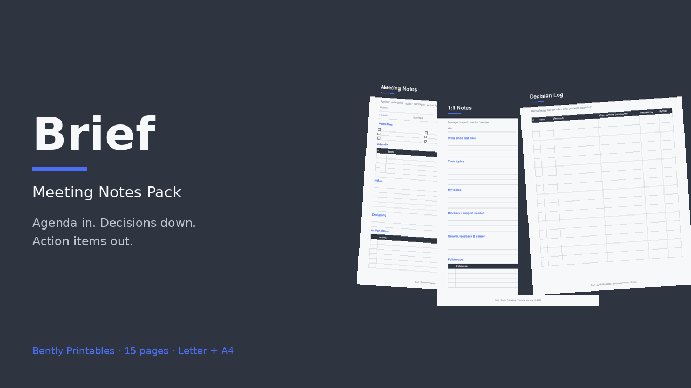

15 printable pages, Letter + A4
- Meeting notes (agenda · attendees · notes · decisions · action items)
- Meeting agenda · action item tracker
- 1:1 notes · project standup log · decision log
- Parking lot · project retro
- 4 blank masters (meeting notes, decision log, lined, dot grid)
Start free
Download the meeting notes page, then grab the full pack.